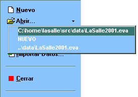
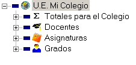
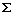
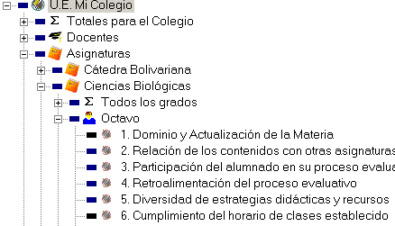

Uso del Programa
Al ejecutarse, EVA presenta a la izquierda un menú con los comandos para operar el programa.
Para abrir un archivo con datos seleccione la opción Abrir, o seleccione uno de los archivos en la lista que aparece bajo dicha opción cuando se oprime el botón de despliegue .

Una vez abierto el archivo, el lado derecho de la ventana principal presenta la jerarquía de informes que pueden ser impresos o visualizados por pantalla.

Los renglones presentados en la jerarquía son:

Totales para el Colegio.Informes con la suma de las respuestas dadas a cada pregunta en todos los cursos encuestados.
- Docentes
Informes para cada docente: generales, y por asignatura, grado, y sección.
- Asignaturas
Informes por asignatura y grado, sumadas las secciones (informes independientes del docente).
Estos informes permiten comparar los resultados para cada docente con los resultados promedio para la asignatura.
- Grados
Informes por grado y sección, sumadas todas las asignaturas.
Estos informes permiten comparar los resultados por docente y asignatura con los resultados generales por grado y sección.
Si las encuestas ya han sido procesadas, el programa presentará las preguntas de la encuesta en el último nivel de la jerarquía.

Los recuadros coloreados que aparecen a la izquierda de cada ítem indican el valor promedio de las respuestas: negro para promedios altos, y una degradación del azul al amarillo para promedios de mayores a menores.
Para visualizar los resultados de cualquiera de las preguntas, seleccione el ítem y oprima Enter (Intro, Return), haga "doble clic" con el ratón, o seleccione la opción Resultados del menú:
Para imprimir los informes correspondientes a cualquier parte de la jerarquía, seleccione la opción Imprimir del menú: